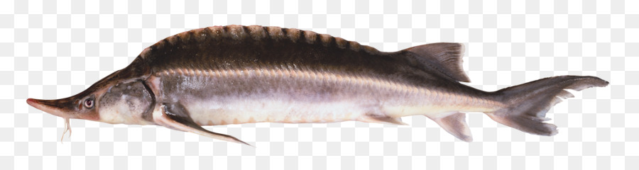

Esturjão
What is it?
- Reino: Acipenseridae
- Filo: Chordata
- Classe: Actinopterygii
- Ordem: Acipenseriformes
- Familia: Acipenseridae
Esturjão é o nome comum usado para designar as espécies de peixes da família Acipenseridae.
É característico terem corpos alongados, ausência de escamas, estarem cobertos por placas ósseas e chegarem a 3,5 m de comprimento, sendo assim considerados peixes de grande porte.
Where to find?
Originalmente de rios e lagos da Europa Central, agora podem encontrar-se tanto em rios como em mares espalhados por todo o mundo, desde os Grandes Lagos e rios da América do Norte
até ao Oceano Atlântico e Pacifico.
Interesting facts!
- A maioria das espécies são Anádromas, ou seja reproduzem-se em água doce mas desenvolvem-se até à idade idulta em mares.
- É uma espécie de peixe extramamente procurada a nivel de pesca, por causa do caviar que é feito a partir da sua ova.
- A maioria das espécies de esturjão estão consideradas em perigo de extinção devido à pesca excessiva.
- São peixes capazes de viver mais de 100 anos.
